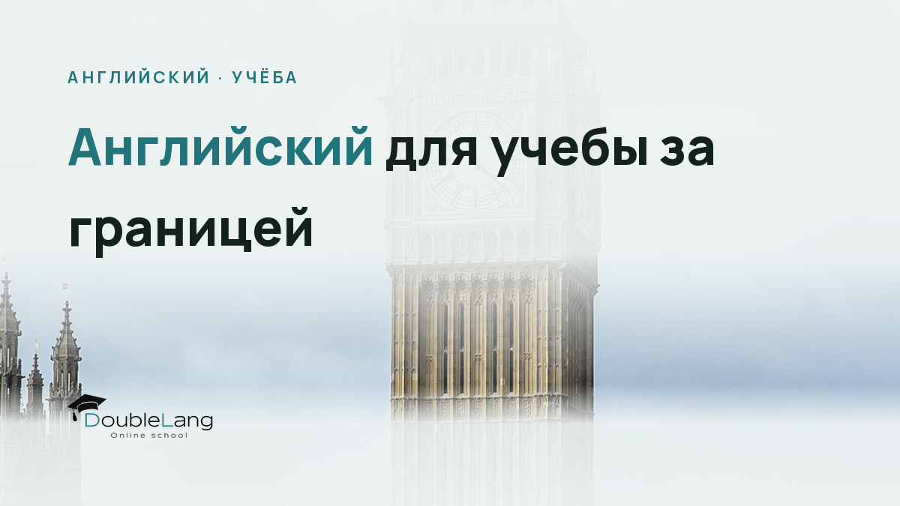

Поступление в зарубежный университет открывает невероятные возможности, но требует серьёзной языковой подготовки. Английский для учебы за границей отличается от разговорного или бизнес-английского: здесь нужны специфические навыки академического письма, понимание лекций, умение участвовать в семинарах и работать с научной литературой. Разбираемся, как подготовиться к этому вызову системно.
С какого уровня английского можно поступать в зарубежный вуз
Большинство университетов в англоязычных странах устанавливают минимальный порог B2 по шкале CEFR (Common European Framework of Reference). Это уровень, на котором вы понимаете основные идеи сложных текстов, можете аргументированно высказываться по знакомым темам и общаться с носителями без серьёзных затруднений.
Но реальность такова: B2 хватает для формального зачисления, однако комфортно учиться на этом уровне сложно. Лекции идут быстро, используется узкоспециальная терминология, а на семинарах от вас ждут критического анализа, а не пересказа прочитанного. Мои студенты, которые поступили с минимальным B2, говорят честно: первый семестр превращается в борьбу за выживание.
Первый урок бесплатно: преподаватель определит уровень и составит план под вашу цель.
Записаться на пробный урокВажно: топовые университеты (Оксфорд, Кембридж, Лига Плюща в США) обычно требуют C1 или даже C2 на определённых программах. Для магистратуры и докторантуры планка всегда выше, чем для бакалавриата.
Какой балл IELTS нужен для поступления в университет Великобритании
Для бакалавриата большинство британских вузов запрашивает IELTS Academic 6.0-6.5 overall, что соответствует уровню B2. При этом часто есть требования к отдельным секциям: не ниже 5.5-6.0 в каждой из четырёх частей (Listening, Reading, Writing, Speaking).
Магистерские программы обычно требуют 6.5-7.0, а престижные факультеты вроде юридических или медицинских могут просить 7.5 и выше. Университеты Russell Group (ведущие исследовательские вузы Великобритании) редко опускаются ниже 6.5, а для специальностей, связанных с языком или преподаванием, планка поднимается до 7.0-8.0.
Подробнее о выборе нужного модуля экзамена читайте в нашей статье IELTS General или Academic: как не ошибиться с выбором.
TOEFL для университета: альтернатива IELTS
В США и Канаде чаще принимают TOEFL iBT. Типичные требования: 80-90 баллов из 120 для бакалавриата, 90-100+ для магистратуры. Многие европейские университеты также признают TOEFL наравне с IELTS, хотя IELTS там традиционно популярнее.
Выбирая между экзаменами, учитывайте формат: TOEFL полностью компьютеризирован, включает интегрированные задания (например, прочитать текст, послушать лекцию и написать эссе, объединяющее обе темы). IELTS предлагает Speaking с живым экзаменатором, что для кого-то психологически проще. Сравнение экзаменов мы подробно разобрали в материале TOEFL iBT в 2026 году: подробное руководство.
| Уровень CEFR | IELTS Academic | TOEFL iBT | Достаточно для |
|---|---|---|---|
| B2 | 5.5-6.5 | 72-94 | Минимум для поступления, conditional offers |
| C1 | 7.0-8.0 | 95-109 | Комфортная учёба, большинство магистерских программ |
| C2 | 8.5-9.0 | 110-120 | Топовые вузы, специальности с высокими языковыми требованиями |
Академический английский язык: что это и чем отличается от разговорного
Академический английский (Academic English) включает специфическую лексику, грамматические конструкции и стилистические нормы, которые редко встречаются в повседневном общении. Если в бытовом диалоге вы можете сказать «I think this is wrong», то в эссе от вас ждут «The evidence suggests that this approach may be flawed» или «This hypothesis appears to contradict existing findings».
Ключевые особенности академического стиля:
- Формальность: никаких сокращений (don't → do not), разговорных фраз (a lot of → a considerable amount of) и личных местоимений в формальных текстах
- Пассивные конструкции: «The experiment was conducted» вместо «We conducted the experiment»
- Номинализация: превращение глаголов в существительные («to analyse» → «the analysis», «to discover» → «the discovery»)
- Hedging language: смягчающие выражения вроде «it appears that», «may indicate», «suggests», которые показывают академическую осторожность в выводах
Русскоязычные студенты часто пишут слишком прямолинейно, не используя модальность. В русском научном тексте мы пишем «Исследование показывает», в английском корректнее «The research tends to suggest» или «appears to demonstrate». Это не неуверенность, а признак академической культуры.
Как развить академическую лексику английского языка
Начните с Academic Word List (AWL) - списка 570 словарных семей, которые покрывают около 10% слов в академических текстах любой дисциплины. Эти слова встречаются в научных статьях, лекциях и учебниках независимо от того, изучаете вы биологию или социологию.
Примеры слов из AWL: analyse, approach, area, assess, assume, authority, available, benefit, concept, consist, constitute, context, contract, create, data, define, derive, distribute, economy, environment, establish, estimate, evidence, export, factor, finance, formula, function, identify, income, indicate, individual, interpret, involve, issue, labour, legal, legislate, major, method, occur, percent, period, policy, principle, proceed, process, require, research, respond, role, section, sector, significant, similar, source, specific, structure, theory, vary.
Читайте академические тексты в своей области
Найдите несколько научных статей или учебных пособий по вашей будущей специальности на английском. Выписывайте незнакомые слова целыми фразами (collocations): например, не «significant», а «statistically significant difference», «significant impact on», «play a significant role in». Академическая лексика работает в устойчивых сочетаниях.
Используйте корпусы английского языка
Сервисы вроде Corpus of Contemporary American English (COCA) показывают, как слово употребляется в реальных академических текстах. Вводите слово и смотрите примеры из научных журналов - так вы учитесь естественному контексту, а не только словарному значению.
Ведите глоссарий по дисциплине
Создайте документ или карточки с терминологией вашей будущей специальности. Для каждого термина записывайте определение на английском (не перевод!), пример использования и синонимы. Это готовит вас к тому языку, который услышите на лекциях.
Хороший приём: возьмите статью на русском по вашей теме, а затем найдите аналогичную на английском. Сравните, как формулируются те же идеи. Вы увидите типичные академические конструкции, которые в русском отсутствуют или выглядят иначе.
Подготовка к academic writing для университета
Письменные работы составляют огромную часть университетской нагрузки: эссе, research papers, literature reviews, case studies, lab reports. Каждый жанр имеет строгую структуру и ожидания, и русскоязычным студентам часто приходится переучиваться.
В русской академической традиции мы склонны к обширным вступлениям, философским отступлениям, постепенному подведению к тезису. Англо-саксонская традиция требует прямолинейности: тезис формулируется в первом же параграфе, каждый следующий абзац начинается с topic sentence, которое сразу объявляет его главную мысль.
Как написать academic essay на английском
Типичная структура эссе в англоязычном университете:
Introduction (10% объёма): hook (привлекающее внимание утверждение или вопрос), background (контекст темы), thesis statement (ваш главный аргумент или позиция по вопросу). Тезис должен быть конкретным и спорным, не общим местом.
Body paragraphs (80%): каждый параграф раскрывает один аспект вашего тезиса. Начинается с topic sentence, затем идут supporting evidence (цитаты, данные, примеры), analysis (ваша интерпретация этих доказательств) и linking sentence к следующему параграфу.
Conclusion (10%): краткое резюме аргументов (не дословное повторение!), restatement of thesis другими словами, broader implications (что это значит в более широком контексте).
Внимание: плагиат в западных университетах карается крайне строго, вплоть до исключения. Любая чужая идея или формулировка должна быть процитирована в соответствии с требуемым стилем цитирования (APA, MLA, Harvard, Chicago). Даже перефразирование требует ссылки на источник.
Стили цитирования и референсинг
Каждая дисциплина использует свой формат библиографических ссылок. Гуманитарные науки часто требуют MLA, социальные науки и психология - APA, история и некоторые гуманитарные области - Chicago.
Типичная ошибка: студенты используют автоматические генераторы цитирований, но не проверяют результат. Научитесь форматировать ссылки вручную хотя бы для основных типов источников (книга, статья в журнале, веб-сайт). Это покажет, что вы понимаете логику системы, а не просто копируете.
Полезные ресурсы: Purdue Online Writing Lab (OWL) - золотой стандарт руководств по академическому письму на английском, с примерами цитирования во всех основных стилях.
Английский для участия в семинарах и дискуссиях
Семинары (tutorials, seminars, discussion sections) пугают даже студентов с хорошим письменным английским. Здесь нужно быстро формулировать мысли устно, реагировать на аргументы однокурсников, задавать вопросы преподавателю. И всё это в атмосфере, где от вас ждут активного участия: молчание воспринимается как отсутствие подготовки.
Функциональные фразы для академических дискуссий
Выучите набор устойчивых выражений, которые помогут структурировать вашу речь:
Для выражения мнения:
- From my perspective...
- It seems to me that...
- I would argue that...
- Based on the readings, I believe...
Для согласия и развития идеи:
- I agree with X's point about... and would add that...
- Building on what X said...
- That's an interesting observation. It also relates to...
Для вежливого несогласия:
- I see your point, but I would suggest that...
- That's one way to look at it. However, another perspective might be...
- I'm not entirely convinced because...
Для запроса уточнения:
- Could you elaborate on...?
- I'm not sure I follow. Do you mean that...?
- How does this connect to...?
Русскоязычные студенты часто боятся перебивать или возражать преподавателю, считая это невежливым. В англоязычной академической культуре конструктивное несогласие - признак вовлечённости и критического мышления. Главное - делать это respectfully, используя смягчающие конструкции.
Как подготовиться к семинару
Прочитайте заданные материалы дважды: первый раз для общего понимания, второй - делая заметки. Выпишите 2-3 ключевые идеи или цитаты, к которым у вас есть вопросы или мысли. Сформулируйте хотя бы один вопрос заранее, даже если не зададите его.
Во время семинара записывайте не всё подряд, а ключевые термины и имена. Это поможет вам вернуться к теме, если захотите что-то добавить позже. Старайтесь высказаться в первые 15 минут - потом будет психологически сложнее.
Первый урок бесплатно: преподаватель определит уровень и составит план под вашу цель.
Записаться на пробный урокАнглийский для учебы в университете: понимание лекций
Лекции идут быстро, преподаватели используют специфическую терминологию, а в больших аудиториях акустика часто неидеальна. Ваша задача - не записать каждое слово, а уловить структуру аргументации и ключевые концепции.
Университетские лекторы обычно используют сигнальные фразы (signposting language), которые помогают ориентироваться в структуре лекции:
- «Today we'll be looking at...» (анонс темы)
- «First... Second... Finally...» (последовательность пунктов)
- «The key point here is...» (главная идея)
- «In other words...» (перефразирование)
- «This is crucial because...» (объяснение значимости)
- «On the one hand... On the other hand...» (контраст)
- «To illustrate this...» (переход к примеру)
Тренируйте восприятие на слух академического английского через TED talks по вашей области, университетские лекции на YouTube (многие вузы выкладывают полные курсы), подкасты вроде BBC's In Our Time. Включайте субтитры только если совсем не понимаете, потом пересматривайте без них.
Полезный метод: слушайте лекцию отрезками по 5 минут, ставьте на паузу и пересказывайте основные мысли вслух. Так вы проверяете понимание и тренируете умение извлекать главное из потока информации.
Подготовка к обучению за рубежом: практический план
Если у вас есть год или больше до начала учёбы, распределите подготовку на этапы. Работать одновременно над всеми навыками сложно, лучше идти последовательно, но с перекрытием.
За 12 месяцев до поступления
Оцените текущий уровень: пройдите пробный IELTS или TOEFL онлайн, чтобы понять разрыв между тем, где вы сейчас, и требованиями университета. Если вы на уровне B1, а нужен C1, понадобится интенсивная подготовка.
Начните строить базу академической лексики: изучайте по 10-15 слов из Academic Word List в неделю, обязательно в контексте. Читайте адаптированные академические тексты (Penguin Readers, Oxford Bookworms на уровнях 5-6).
За 6-9 месяцев
Регистрируйтесь на экзамен IELTS или TOEFL и начинайте целенаправленную подготовку. Разбирайте структуру каждой части экзамена, учитесь управлять временем.
Параллельно читайте оригинальные научные статьи и учебники по вашей специальности. Пока не обязательно понимать каждое слово, цель - привыкнуть к плотности и структуре академического текста. Выписывайте терминологию.
Начните практиковать письмо: пишите короткие эссе (250-300 слов) на разные темы раз в неделю. Просите преподавателя проверить грамматику, структуру аргументации, use of evidence, формальность стиля.
За 3-6 месяцев
Сфокусируйтесь на слабых зонах экзамена: если проседает Listening, делайте диктанты с академическими лекциями; если Writing - нарабатывайте скорость и учитесь укладываться в лимит слов.
Тренируйте Speaking в академическом контексте: описывайте графики, сравнивайте теории, обосновывайте позицию, а не ограничивайтесь small talk. Занятия с преподавателем здесь незаменимы - он даст обратную связь по произношению, интонации, грамматике в речи.
Смотрите документальные фильмы и лекции на темы, близкие к вашей специальности. Тренируйте конспектирование на английском: записывайте ключевые идеи своими словами, не стенографируя дословно.
После сдачи экзамена
Даже если получили нужный балл, не останавливайтесь. До начала учёбы продолжайте поддерживать язык: читайте академические тексты, слушайте подкасты, пишите короткие summaries прочитанного.
Если возможно, пройдите preparatory или foundation course при университете. Многие вузы предлагают летние программы для международных студентов, где учат именно навыкам академического английского, стилям цитирования и культуре учебного процесса.
| Навык | Как развивать | Частота практики |
|---|---|---|
| Академическая лексика | Карточки со словами из AWL в контексте, чтение научных статей с выписыванием collocations | Ежедневно, 20-30 мин |
| Academic Writing | Написание эссе с проверкой преподавателем, изучение образцов, анализ структуры аргументации | 1-2 эссе в неделю |
| Listening (лекции) | Университетские лекции на YouTube, TED talks, подкасты с конспектированием | 3-4 раза в неделю по 30-40 мин |
| Speaking (семинары) | Дискуссии с преподавателем, ролевые игры, пересказ академических текстов устно | Минимум 2 раза в неделю по часу |
| Reading | Научные статьи, главы из учебников, критический анализ аргументов автора | Ежедневно, 40-60 мин |
Частые вопросы
Какой уровень английского нужен для учебы в университете за границей
Минимальный порог для большинства университетов - B2 (IELTS 6.0-6.5, TOEFL 80-90), но для комфортной учёбы лучше стремиться к C1 (IELTS 7.0+, TOEFL 95+). Престижные вузы и магистерские программы часто требуют именно C1 или выше. Уровень B2 достаточен для формального зачисления, однако первый семестр может быть тяжёлым из-за плотности академического языка и скорости лекций.
Как подготовиться к обучению на английском языке
Начните за год-полтора: сдайте пробный экзамен IELTS или TOEFL для оценки текущего уровня, затем системно работайте над четырьмя навыками. Читайте академические тексты по вашей специальности, учите лексику из Academic Word List, пишите эссе и просите преподавателя проверять структуру аргументации. Слушайте университетские лекции на YouTube, тренируйте конспектирование, практикуйте устную речь с фокусом на академические дискуссии. Занятия с опытным преподавателем, который знает требования зарубежных вузов, ускорят процесс.
Сколько нужно готовиться к IELTS для поступления в университет
При начальном уровне B1 подготовка до B2-C1 занимает обычно 6-12 месяцев интенсивных занятий (4-6 часов в неделю с преподавателем плюс самостоятельная работа). Если вы уже на уровне B2 и нужно дотянуть до C1, может хватить 3-6 месяцев целенаправленной подготовки. Скорость зависит от исходного уровня, интенсивности занятий и того, насколько системно вы работаете над слабыми зонами. Главное - не откладывать подготовку на последние месяцы.
Как написать academic essay на английском
Начните с чёткого thesis statement во введении - это ваш главный аргумент, который будете доказывать. Каждый body paragraph посвятите одной идее: начинайте с topic sentence, приводите доказательства (цитаты, данные, примеры), анализируйте их значение для вашего тезиса. Используйте формальный язык, избегайте сокращений и разговорных оборотов. В заключении резюмируйте аргументы другими словами и покажите broader implications. Обязательно цитируйте все источники в требуемом стиле (APA, MLA, Harvard). Проверьте структуру: тезис понятен с первого абзаца, каждый параграф логически связан с предыдущим.
Нужен ли TOEFL для учебы в Европе
Многие европейские университеты принимают TOEFL наравне с IELTS, особенно на программах, преподаваемых на английском в неанглоязычных странах (Нидерланды, Германия, Швеция, Дания). Однако в Великобритании традиционно популярнее IELTS, и некоторые вузы предпочитают именно его. Перед выбором экзамена проверьте requirements конкретного университета на официальном сайте - там всегда указано, какие сертификаты принимаются и минимальные баллы. Если планируете подавать документы в несколько стран, уточните требования каждой.
Как улучшить академический английский самостоятельно
Читайте научные статьи и учебники по вашей специальности, выписывайте незнакомую лексику с примерами употребления. Слушайте университетские лекции (MIT OpenCourseWare, Yale Open Courses на YouTube) и тренируйте конспектирование на английском. Пишите короткие summaries прочитанных статей, затем эссе-аргументации на академические темы. Изучайте примеры хороших эссе на Purdue OWL, анализируйте их структуру. Для Speaking и Writing критически важна обратная связь от преподавателя - самостоятельно сложно увидеть ошибки в аргументации или неестественные конструкции, поэтому комбинируйте самоподготовку с регулярными занятиями.
Английский для поступления в университет: последний рывок
Готовиться к учёбе на английском языке сложно, но это инвестиция, которая окупается многократно. Первый семестр может быть непростым, даже если вы отлично сдали экзамен, потому что реальная университетская среда всегда интенсивнее любого теста. Но с каждой прочитанной статьёй, каждым написанным эссе, каждым семинаром становится легче.
Помните: академический английский - это не про идеальную грамматику (хотя она важна), а про умение ясно формулировать и обосновывать идеи, работать с источниками, участвовать в интеллектуальной дискуссии. Эти навыки нарабатываются практикой, и начать никогда не рано.
Если чувствуете, что самостоятельная подготовка идёт медленно или нужна экспертная обратная связь, преподаватели DoubleLang помогут выстроить индивидуальную программу с фокусом на ваши цели: будь то IELTS для поступления, развитие academic writing или подготовка к конкретной специальности. Удачи в поступлении и будущей учёбе - этот путь того стоит.
Сделайте первый шаг к вашей цели
Запишитесь на пробное занятие в DoubleLang и получите индивидуальный план подготовки к экзамену и переезду от наших методистов.
Записаться на пробный урокИли посмотрите, как проходят занятия: Английский язык в DoubleLang.